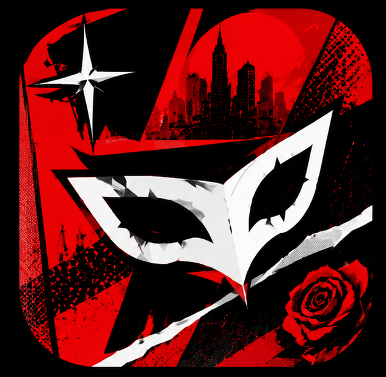
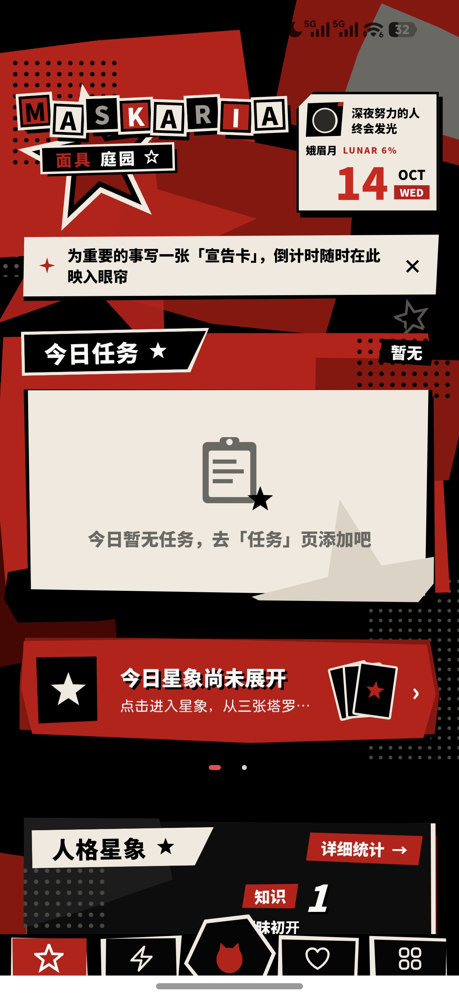
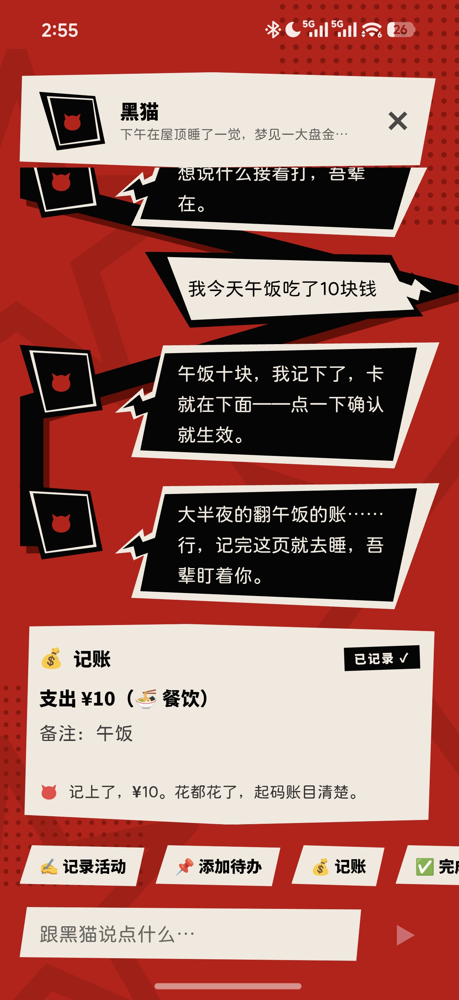
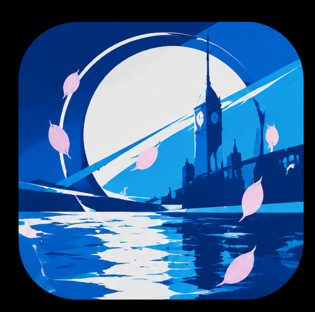
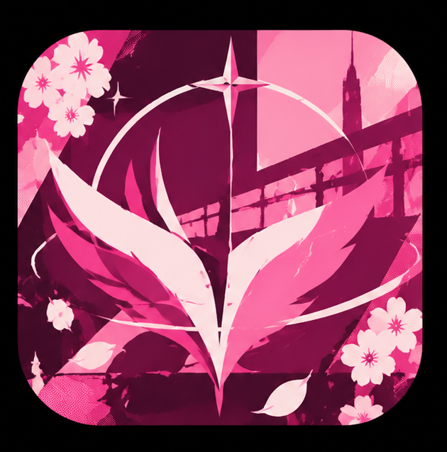
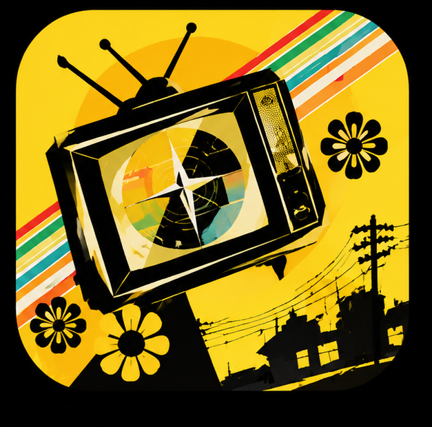
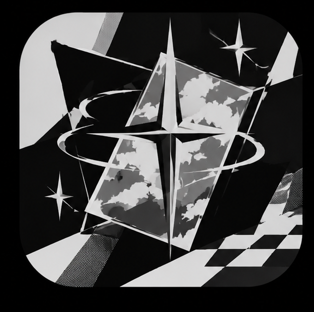

剪报怪盗
纯黑舞台，猩红斜块碰撞，半调网点，撕纸卡，直角。
完成叫「夺回」，删除叫「撕掉」，任务页叫「行动」。
按钮长这样
夺回

你说「今天看了二十页书」，它记下来，给你加 0.5 点知识。就这 0.5 点。
Android 端可以直接装；iOS 没做，Apple 开发者账号太贵。
你熬的那些夜算数，看的书算数，压下去的那通火也算数。
这些东西不会自己留下痕迹。久了连你自己都忘了，最后你会觉得那几年好像什么都没干。
MASKARIA 就是干这个的：它替你把痕迹留下来。它没法让你变强，没有任何软件能做到那个。它只做一件很小的事，就是你上面看到的那句。
它也不催你。它就安静待在那儿，像一个知道你已经很累了的朋友。

胆量Lv.1
畏首畏尾
跟人吵了一架但忍住了，也记。
灵巧Lv.1
手忙脚乱
手比昨天稳一点，也算数。
知识Lv.1
1
蒙昧初开
看了二十页书 +0.5
每做一件事，往上加一点。加着加着就升级了，升级解锁技能。
温柔Lv.1
0
冷眼旁观
对别人好的那份算，对你自己的那份也算
它不评价你做得够不够。评价是你自己的事，它只负责记账。
魅力Lv.1
平平无奇
不用变外向。有魅力这件事，很多时候只是睡够了。
「看了二十页书」
知识 +0.5
记一笔：用大白话写你干了什么，属性它替你猜，猜错了你改。
支出 ¥10餐饮
今天还能花 ¥87.5
记账：一句话记一笔，「今天还能花多少」它替你算好。
名字你随便改，改成「体重」「存款」「发际线」都行，它不会拦你，也不会多问一句。
「看了二十页书」 还没猜属性
你先说这一句。
「看了二十页书」 知识 +0.5
它猜一项。猜错了，你自己改。
知识已入账 10 月 14 日 热力日历上多一格
你点确认。
知识Lv.2 略有所知 技能激活后，加点再涨一点
攒着攒着，它自己就长起来了。
「我今天午饭吃了10块钱」
这是你跟助手的原话。它不要求你用格式，也不要求你先分类。
记账已记录 支出 ¥10 备注：午饭 餐饮 今天还能花 ¥87.5
一句话里好几笔也能拆开。流水按设计永不上传，只存在你的设备里。

用大白话描述你干了什么。可以补记一周内的旧账——毕竟你也不是每天都记得上来写，人嘛。
重要标记、日历热力图、按年月日归档、全文搜索，都在这一块里。
任务绑定属性和点数，完成后自动加点。「每日重复」养习惯，「长期目标」记累计次数，「本周目标」盯住这一周的推进。
给「大事」准备的：拆成若干小步，一步一步勾掉，收官时一次性结算，顺手放一段庆祝动画。就当这世上还有人记得你干成了这件事。
为重要的事立一张卡：倒计时、目标宣言，钉在首页，每天映入眼帘。临期提醒，收官有专属演出。这是在给自己的未来写欠条。
一句话记一笔。真实总余额、月度预算环、「今天还能花多少」、资产板块、月末结算。
「成长」类的花销会反过来给你加属性点。花在自己身上的钱，不算白花。
用 22 张大阿卡纳代表你身边重要的人。记一次互动涨一点亲密度，等级上去解锁道具与日常加成。
每天可以向同伴祈愿，凌晨四点重置——那会儿大多数人已经睡了。登录后输入对方的 UserID 可以缔结约定，双向同步。
「影时间」降临时，暗影出现。召唤属于你的面具，给五项属性各绑一套技能，出招看局势：伤害、暴击、蓄力、易伤。想往深处走就顺着高塔一层层往上爬。
每天三选一抽一张塔罗，给一段运势和一句建议，顺手给某个属性加成。另有持续十四天、可以追问一次的中长期占卜。
没配 AI 也能抽，有离线解读兜底，不至于让你对着一个转圈的加载图标发呆。
住在底部中央那个 ◈ 里的对话式助手。说人话就能记账、加任务、写记录，它记得你手头在做的事，会在合适的时候提一句。
人格可以换，也可以自己捏一个。聊天原文只存在你的设备上，永不上传。
是换一整套设计语言。红色的世界里，完成叫「夺回」，删除叫「撕掉」。点下面那一排，整页跟着换。
剪报怪盗
纯黑舞台，猩红斜块碰撞，半调网点，撕纸卡，直角。
完成叫「夺回」，删除叫「撕掉」，任务页叫「行动」。
按钮长这样
夺回

白日水面
近白底，斜切平行四边形，超大黑斜体，背景里压着幽灵英文大字。
完成叫「达成」，滑动切换，页面之间是水面漫过去的转场。
按钮长这样
达成

白日水面 · 玫瑰
同一套骨架，色相整体旋到玫瑰紫，青信号换成紫罗兰。
结构、斜切、幽灵大字一个字不动，只换了这一族颜色。
按钮长这样
达成

今日节目单
高饱和黄舞台，黑信息面板，衬线大标题，圆角斜切胶囊。
完成叫「打卡」，实景云天空当底，一天排成一档节目。
按钮长这样
打卡

中性皮
你挑一个主色，整族从它派生：大色块压暗，白的字才站得住。
下面这六个色号都是从上面几套语言里取下来的。
挑一个主色
每套语言还各配了长按轮盘、庆祝演出、页间转场、按压反馈和夜间模式。Android 端连桌面图标都会跟着换。
白日水面的海蓝与玫瑰是同一套骨架的两件衣服：斜切、幽灵大字、白面板一个字不动，只把色相整体旋过去。
记账流水、聊天原文、配图与音乐，永不上传。
AI 是你自带的。Key 存本机，不上云、不进日志。
服务端只提供可选的转发通道，默认不持有任何服务商的密钥。云同步是你自己按类目开的开关，默认全关。这两条不是选项，是它做出来的时候就这么写的。
上面是它真正用到的东西，一个不落。原始项目 the-velvet（靛蓝色房间）由 YuukiMarine 创作，本作基于它二次创作，按同一个协议开源。
202
项前端自动化测试通过，分布在 32 个测试文件里
13
个数据库版本，从空库到能用一键完成
0
条上传的记账流水，按设计一条都不会有
前端 32 个测试文件、202 项测试全绿，后端跑在 MySQL 上。Android 包需要你自己构建一次，命令都写在仓库里。
安装包 26 MB，不在仓库里，跟着源码一起构建：npm run cap:build:android